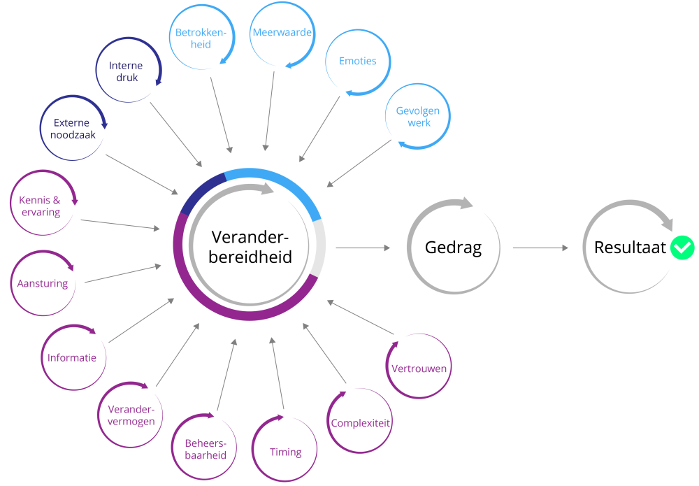

Smart Me
Ook heb ik dit semester gefocust op mijn persoonlijke ontwikkeling. Dit zal hier worden toegelicht.
Wat is het doel?
Mij ontwikkelen als 'digitale transformator' stond centraal in deze minor. Maar wat is dat precies?
Een digitale transformator is iemand die organisaties helpt bij het integreren van digitale technologieën om bedrijfsprocessen te verbeteren, innovatie te stimuleren en concurrentievoordeel te behalen. Tijdens deze minor heb ik mij gericht op het ontwikkelen van vaardigheden zoals data-analyse, procesoptimalisatie, verandermanagement, technologische kennis en hoe deze inzetbaar is binnen organisaties.

De nulmeting
Om gericht te kunnen werken dit semester, heb ik een nulmeting gedaan a.d.h.v. het onderstaande schema. Zo kon ik beter inschatten op welke aspecten ik al voldoende kennis en ervaring had, en op welke ik mij nog verder moest ontwikkelen. Als ik kritisch keek naar de punten in het schema, heb ik mij op drie punten gefocust. Namelijk: Competentie nummer 1, 2 en 4.

Nu ik weet op welke onderwerpen ik mij het meest wil richten, heb ik concrete doelen opgesteld per onderdeel. Deze zijn:
- 1. Ik wil mij ontwikkelen op gebied van techniek (niet alleen de deelproducten van deze minor maar ook techniek die bij het vraagstuk van het bedrijf past) en samen met mijn groepsgenoten een product opstellen waar elk® er iets mee kan.
- 2. Ik wil tijdens dit project goed in kaart brengen wat de organisatie en de verschillende stakeholders in het deelproduct willen en dat meenemen in het product. Dit om zo de juiste afweging te kunnen maken over welke technologie het meest past bij de verandering binnen het bedrijf.
- 3. Ik wil graag beter de stakeholders betrekken bij de ontwikkelingen die ik doe binnen het project en vaker om tussentijdse feedback vragen. Dit om gerichter te werken en de verwachtingen van het product continu bij te stellen.
Wat heb ik gedaan?
Om goed uit te kunnen leggen hoe ik mij in deze punten heb ontwikkeld zal ik dat per punt toelichten, evenals wat dit heeft bijgedragen tot mijn ontwikkeling als digitale transformator.
1. Het ontwikkelen op gebied van techniek (niet alleen de deelproducten van deze minor maar ook techniek die bij het vraagstuk van het bedrijf past) en samen met mijn groepsgenoten een product opstellen waar elk® er iets mee kan.
Dit was voor mij een belangrijk punt. Los van mijn persoonlijke interesse in de technische onderwerpen, is het ook voor elk® van belang dat mijn groepsgenoten en ik op een professionele manier binnen het bedrijf te werk gaan en een effectieve toepassing voor het probleem vinden. Hiervoor moet men eerst een goed beeld hebben bij de techniek die van toepassing kan zijn binnen de opdracht. Zo was een vraagstuk wat binnen het bedrijf lag: op welke manier kan elk® op een effectieve manier de data die zij nodig hebben ophalen vanuit de leveranciers waarmee zij werken? De nadruk lag dan vooral op verschillende punten, namelijk dat het makkelijk te gebruiken moet zijn voor beide partijen, idealiter moet het automatisch kunnen worden verstuurd en opgehaald, en tot slot moet het makkelijk integreerbaar zijn binnen de organisatie. Met deze randvoorwaarden in acht nemend, hebben wij verschillende mogelijkheden afgewogen. We hebben gekeken naar de voor- en nadelen van de volgende systemen: Microsoft Forms, Microsoft PowerApps, een API koppeling vanuit de leverancier en Microsoft Excel met Power Query. Na een uitgebreide afweging, hebben wij gekozen voor de laatste optie. Dit omdat dit systeem het beste aansloot bij de wensen van elk®, maar ook omdat dit systeem makkelijk te gebruiken is voor de leveranciers. Daarnaast is deze manier ook makkelijk integreerbaar binnen de organisatie van elk® en valt het binnen de licenties die elk® al heeft. Het kritisch overwegen en onderzoek doen naar de verschillende opties, heeft mij zeker geholpen om mij verder te ontwikkelen op technisch gebied. Ik heb hierdoor een beter beeld gekregen van de verschillende systemen die er zijn en hoe deze toegepast kunnen worden binnen een organisatie. Daarnaast moet die informatie ook worden verwerkt. Een andere wens van elk® was dat wij een Microsoft Power BI dashboard zouden opleveren waarin de data overzichtelijk wordt weergegeven. Hiervoor heb ik mij ook verder verdiept in Power BI en hoe je data het beste kan visualiseren. Alhoewel mijn groepsgenoten hier meer mee bezig zijn geweest dan ik, heb ik toch een goed beeld gekregen van hoe dit systeem werkt en hoe je data kan omzetten in bruikbare informatie. Al met al heeft dit punt mij zeker geholpen om mij verder te ontwikkelen op technisch gebied en hoe dit aansluit op veranderingen binnen een organisatie.

Deze tabel geeft niet de volledige afweging die wij hebben gemaakt weer, maar geeft wel een goed beeld van hoe wij de verschillende opties hebben vergeleken. Deze factoren waren voor de organisatie het meest van belang en hierop hebben wij onze keuze gebaseerd. Als we kijken naar de API zou dit eigenlijk de beste keuze zijn op het gebied van automatisering en efficiëntie. Echter, dit systeem is voor veel leveranciers te complex en past niet binnen de huidige technische mogelijkheden van elk®. Daarom hebben wij gekozen voor de Excel met Power Query optie, wat voor beide partijen goed werkbaar is en aansluit bij de wensen van elk®. Kijkend naar het begrip van digitale transformatie, is dit een goed voorbeeld van hoe technologie kan worden ingezet om bedrijfsprocessen te verbeteren en waarde toe te voegen binnen een organisatie. Door technische mogelijkheden af te wegen en te implementeren binnen elk®, heeft dit zeker bijgedragen aan mijn ontwikkeling als digitale transformator.
2. Het goed in kaart brengen wat de organisatie en de verschillende stakeholders in het deelproduct willen en dat meenemen in het product. Dit om zo de juiste afweging te kunnen maken over welke technologie het meest past bij de verandering binnen het bedrijf.
Dit punt komt deels overeen met het vorige punt, alleen hierbij is het erg van belang dat je ten eerste de juiste stakeholders identificeert en daarnaast goed in kaart brengt wat hun wensen en behoeften zijn. Tijdens dit project heb ik mij hier dan ook op gefocust. Allereerst hebben wij een stakeholderanalyse gedaan om te bepalen wie de belangrijkste stakeholders zijn binnen dit project. Hierbij kwamen verschillende interne en externe stakeholders naar voren, zoals de afvalleveranciers, de medewerkers van elk® die met het afvalbeheer bezig zijn en het managementteam van elk®. Nadat wij deze stakeholders hadden geïdentificeerd, hebben wij verschillende interviews en gesprekken gevoerd om hun wensen en behoeften in kaart te brengen. Mijn groepsgenoten en ik hebben een groot document opgesteld waarin alle wensen en eisen stonden en konden met behulp van dat document beter afwegen welke technologische oplossingen mogelijk waren en welke niet. Dit speelt ook weer in op de afweging waar het in het vorige punt over ging. Dit hielp mij om een beter beeld gekregen van wat zij verwachten van het deelproduct en welke functionaliteiten voor hen belangrijk zijn. Door deze informatie mee te nemen in onze afwegingen bij het kiezen van de technische oplossing, konden wij ervoor zorgen dat het uiteindelijke product aansluit bij de behoeften van de organisatie en haar stakeholders. Dit proces heeft mij zeker geholpen om mijn vaardigheden op het gebied van stakeholdermanagement en communicatie te verbeteren, wat essentieel is voor een digitale transformator. Het vermogen om effectief met verschillende belanghebbenden te communiceren en hun behoeften te begrijpen, is erg belangrijk bij het implementeren van technologische veranderingen binnen een organisatie.

Binnen het onderzoek heb ik, samen met mijn groepsgenoten, het belang van dit ontwikkelpunt zeker ingezien. Daarom hebben we in het onderzoeksdocument een deelvraag toegediend aan dit punt. Zo hebben we dus vastgelegd wie alle directe stakeholders zijn en wat die terug willen zien in het systeem. Voor elk persoon die met het systeem gaat werken hebben we een interview gehouden om zo te bespreken wat zij terug wilden zien. Dit hebben we allemaal meegenomen in het project. Door deze stappen te zetten, besefte ik me de noodzaak van dit punt en de kwaliteiten die het oplevert in het project. Dit is een essentiële skill om te bezitten binnen het werkveld en sluit erg goed aan bij mijn ontwikkeling als digitale transformator.
3. Het beter betrekken van de stakeholders bij de ontwikkelingen die ik doe binnen het project en vaker om tussentijdse feedback vragen. Dit om gerichter te werken en de verwachtingen van het product continu bij te stellen.
Het derde punt heeft uiteraard betrekking op het verloop van het project, maar heb ik opgesteld vooral uit persoonlijke redenen. Ik heb (wat mij tijdens mijn stage is opgevallen) de neiging om mijzelf soms wat terug te trekken en zelfstandig te werken. Dit is natuurlijk niet altijd verkeerd, maar hierdoor kan ik gaandeweg toch afwijken van de uiteindelijke verwachting van de opdrachtgever. Wij hadden tijdens dit project wekelijkse meetings met Emma Zwartjes en Johan Peters waardoor de verwachtingen steeds werden bijgescherpt. In een project als dit is het erg belangrijk om goed samen te werken met mijn groepsgenoten en de stakeholders binnen het bedrijf. Daarom heb ik mij dit semester gefocust op het beter betrekken van de stakeholders bij onze ontwikkelingen en vaker om feedback vragen. Dit heb ik gedaan door regelmatig updates te geven aan de stakeholders over onze voortgang en hen uit te nodigen voor feedbacksessies. Tijdens deze sessies hebben wij onze ideeën en prototypes gepresenteerd en hun input gevraagd over wat wel en niet werkt. Deze feedback hebben wij vervolgens gebruikt om onze aanpak bij te stellen en ervoor te zorgen dat we op de juiste weg zaten. Dit proces van continue feedback en iteratie heeft mij geholpen om mijn communicatie- en samenwerkingsvaardigheden te verbeteren, wat essentieel is voor een digitale transformator. Het vermogen om effectief samen te werken met verschillende belanghebbenden en hun input te integreren in het ontwikkelingsproces is cruciaal bij het implementeren van technologische veranderingen binnen een organisatie. Door deze aanpak heb ik niet alleen bijgedragen aan het succes van ons project, maar ook mijn eigen ontwikkeling als digitale transformator verder versterkt. Bovendien, als we kijken naar het begrip multidisciplinair team, heb ik in een diverse groep gewerkt. Ik heb tijdens eerdere projecten altijd samengewerkt met mensen die dezelfde studie als ik studeren. Nu werkte ik met mensen die andere kwaliteiten hebben en dat was erg interessant. Ik kon veel leren van hun kennis en ervaring, wat mij ook heeft geholpen om mijn eigen vaardigheden verder te ontwikkelen. Zeker op technisch gebied, ik kon namelijk vaak met vragen bij hen terecht en ik kon hen helpen met de bedrijfskundige aspecten van het project. Al met al heeft dit punt mij zeker geholpen om mij verder te ontwikkelen als digitale transformator.

In de foto hierboven is een voorbeeld te zien van hoe ik mij heb ontwikkeld op dit punt. Ik heb vaak tijdens het project tussentijdse feedback gevraagd, zo heb ik bijvoorbeeld deze mail naar Emma gestuurd om te controleren of we nog de goede richting op gingen met een vraagstuk. Dit voorbeeld en nog vele andere momenten tonen aan dat ik zeker concreet bezig ben geweest met dit ontwikkelpunt en grote stappen heb gezet.
Verdere ontwikkeling
Los van deze drie ontwikkelingspunten, heb ik mij ook op de andere punten gericht. Ik heb verschillende lessen gehad omtrent persoonlijke ontwikkeling van Mariëlle Seegers en Yvonne Peterman. Bijvoorbeeld de managementgame die zij hebben georganiseerd gaf een interessant beeld over hoe verschillende groepen binnen een bedrijf toch zulke andere prioriteiten en belangen hebben. Het viel op dat het heel erg lastig is om naar een doel te werken terwijl elke partij zijn eigen belangen wil nastreven. Dit gaf mij een goed beeld van hoe lastig het kan zijn om veranderingen binnen een organisatie door te voeren, vooral als er veel verschillende belanghebbenden zijn met uiteenlopende belangen. Dit inzicht zette mij erg aan het denken. Mijn groepsgenoten en ik hebben daarna ook goed nagedacht over hoe wij dit konden toepassen binnen ons project bij elk®. We hebben geprobeerd om de belangen van verschillende stakeholders in balans te brengen en ervoor te zorgen dat onze oplossing aansluit bij de behoeften van alle betrokken partijen. Dit proces heeft mij geholpen om mijn vaardigheden op het gebied van verandermanagement en stakeholdermanagement verder te ontwikkelen, wat essentieel is voor een digitale transformator. Het vermogen om effectief met verschillende belanghebbenden te communiceren en hun belangen in balans te brengen, is lastig om volledig effectief uit te voeren. Zo was het bijvoorbeeld erg lastig om de leverancier mee te krijgen in de veranderingen die elk® graag wil zien.
Het bovenstaande model is het DINAMO model. Dit model hebben wij ook behandeld, het model geeft verschillende factoren weer die een rol spelen bij het succesvol implementeren van veranderingen binnen een organisatie. Deze factoren hebben elk op een ander vlak invloed op de verandering in kwestie. Zo is er bijvoorbeeld de factor 'Draagvlak', wat inhoudt dat er voldoende steun moet zijn binnen de organisatie voor de verandering. Dit kan bijvoorbeeld worden bereikt door medewerkers te betrekken bij het veranderingsproces en hen te informeren over de voordelen van de verandering. Door dit model te begrijpen kan ik beter mijn rol als digitale transformator uitvoeren binnen bedrijven. Ik kan beter inschatten welke factoren van belang zijn bij het implementeren van veranderingen en hoe ik hiermee om moet gaan. Dit zal mij helpen om effectiever te zijn in mijn rol en waarde toe te voegen binnen organisaties die ik help bij hun digitale transformatie zoals bijvoorbeeld elk®. Deze les heeft dan ook erg geholpen bij het project, omdat dit nog meer het belang van stakeholdermanagement en verandermanagement benadrukt.

Mijn groepsgenoten en ik hebben dit model dan ook zelf ingevuld, kijkend naar ons project en de veranderingen die dit met zich mee brengt. Hieruit is te halen dat mogelijke verstarring voornamelijk bij het onderdeel 'kunnen veranderen' ligt. Dit komt voornamelijk doordat het voor veel leveranciers lastig is om hun huidige processen aan te passen en nieuwe systemen te implementeren. Dit kan bijvoorbeeld komen door een gebrek aan technische kennis of middelen om de verandering door te voeren. Om deze verstarring te verminderen, is het belangrijk om de leveranciers goed te ondersteunen bij het implementeren van de verandering. Dit kan bijvoorbeeld door training en begeleiding te bieden, maar ook door het ontwikkelen van gebruiksvriendelijke systemen die aansluiten bij hun huidige processen. Door deze aanpak kunnen we ervoor zorgen dat de verandering succesvol wordt geïmplementeerd en waarde toevoegt binnen de organisatie van elk®. Daarom was gebruiksvriendelijkheid ook een van de belangrijkste factoren bij het kiezen van de technische oplossing voor het data-aanleveringssysteem. Al met al heeft deze les mij zeker geholpen om mijn begrip van digitale transformatie verder te verdiepen en mij meer bewust te maken van de uitdagingen die gepaard gaan met het implementeren van veranderingen binnen organisaties, zeker op technisch gebied.
Feedback
Verschillende keren hebben mijn groepsgenoten feedbacksessies gehad samen met Mariëlle Seegers. Hierin kregen wij de kans om onder andere de voortgang van het project te bespreken, maar voornamelijk onze voortgang op onze persoonlijke ontwikkeling. Ik heb veel goede feedback ontvangen, niet alleen van Mariëlle maar ook van mijn groepsgenoten. Wij hebben namelijk ook het feedbackformulier voor elkaar ingevuld aangezien wij elkaars ontwikkeling vanaf de eerste plaats konden zien. Zo hebben we elkaar ondersteund in de doelen die wij hadden en gaf iedereen ruimte voor elkaar wanneer nodig.
Uit het peer-assessment van bijvoorbeeld mijn groepsgenoot Cas vallen de volgende punten op over mijn functioneren:
- Ik ben erg sterk in de communicatie met de opdrachtgever, waardoor verwachtingen helder zijn en onduidelijkheden binnen het team worden voorkomen.
- Ik kan goed sparren over de inzet van technologieën, waarbij ik de belangen van zowel de projectgever als het team effectief weet af te wegen.
- Ik voel goed aan welke vragen ik aan de organisatie moet stellen en kan onze voortgang op een duidelijke manier overbrengen.
- Binnen het multidisciplinaire team draag ik bij aan een transparante samenwerking door me aan afspraken te houden en proactief te communiceren over wijzigingen.
- Ik ben gedurende het project bewust en met succes bezig geweest met mijn technische ontwikkeling, een doel dat ik vooraf expliciet had gesteld.

Reflectie
Tot slot is het goed om even te reflecteren op mijn ontwikkeling dit semester. Als ik terugkijk op mijn doelen en wat ik heb bereikt, ben ik erg tevreden met mijn vooruitgang. Ik heb mij zeker verder ontwikkeld op technisch gebied, vooral door het werken aan het project bij elk®. Ik heb een beter begrip gekregen van verschillende technologische oplossingen en hoe deze kunnen worden toegepast binnen een organisatie om bedrijfsprocessen te verbeteren. Daarnaast heb ik ook mijn vaardigheden op het gebied van stakeholdermanagement en communicatie verbeterd. Het betrekken van stakeholders bij ons project en het vragen om feedback heeft mij geholpen om effectiever te communiceren en samen te werken met verschillende belanghebbenden. Dit is een essentiële vaardigheid voor een digitale transformator, aangezien het vermogen om effectief met verschillende belanghebbenden te communiceren erg belangrijk is bij het implementeren van technologische veranderingen binnen een organisatie. Ik ben erg tevreden met mijn ontwikkeling dit semester en kijk ik ernaar uit om deze vaardigheden verder toe te passen in mijn toekomstige carrière als digitale transformator. Ook kijk ik nog even naar het onderstaande model, wat ik voorafgaand aan het project heb ingevuld.

Als ik kijk naar wat ik als ideaal minortraject zag, kan ik zeggen dat ik erg blij ben met hoe deze maanden zijn gelopen. Ik ben met een fijne groep ingedeeld waar eigenlijk snel een goede klik mee was. Ook hadden we allemaal hetzelfde doel voor ogen en konden we eigenlijk snel aan de slag. Bovendien hebben we het project bij elk® zo goed mogelijk uitgevoerd en de andere opdrachten vanuit de HAN waren leuk en heb ik ook netjes kunnen doen. In mijn ogen dus een ideaal traject. Verder kwamen we eigenlijk niet zoveel barrières tegen, los van het feit dat het soms lang wachten was op een reactie van bijvoorbeeld een leverancier of een stakeholder binnen elk®. Maar dit is natuurlijk niet iets wat je helemaal kan voorkomen. Kijkend naar hoe ik toentertijd succes had beschreven, ben ik van mening dat mijn zelfopgestelde ontwikkeldoelen aardig zijn bereikt en de reis ernaartoe zeker een aanwinst was. Ik heb nieuwe dingen geleerd, mensen kunnen helpen, een mooie opdracht neergezet en een leuke tijd gehad. Over het algemeen ben ik dus erg tevreden met hoe deze minor is verlopen en heb ik de juiste minor voor mij gekozen.
Reflectiedocument van Emma
Emma Zwartjens heeft een evaluatiedocument ingevuld over de geleverde prestaties van mij en mijn groepsgenoten. Dit document is hieronder te downloaden.
Download Word-bestandVanuit het evaluatieformulier vallen verschillende dingen op. De algehele conclusie van de opdrachtgever is positief: het team is erin geslaagd de opdracht met een "goede voldoende" te vervullen. Emma geeft aan dat elk® ondanks enkele "kleine open eindjes" zeker verder kan met het resultaat. De feedback die zij geeft is zeker waar en ik snap waar ze vandaan komt. Enkele verbeterpunten hebben we gelijk nog aangepast, maar voor sommige punten was dat helaas te laat. Echter zal ik deze punten meenemen naar mijn verdere carrière als bedrijfskundige en digitale transformator.